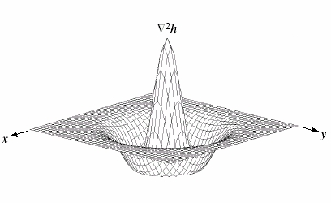

Torna alla pagina di Elaborazione delle Immagini
:: Appello d'esame di Elaborazione delle Immagini - 25/06/2008 ::
Guardando l’immagine mostrata in Figure 1:
Alcune lenti generano una distorsione dell’immagine acquisita che può essere illustrata dalla figura precedente:
(A) Immagine del reticolo distorta dalla lente.
(B) Immagine originale.
Il tipo di distorsione di cui si parla viene detto distorsione radiale perché è proporzionale alla distanza dal centro della lente.
Se x e y sono le coordinate non distorte (in figura (B)) e x’ y’ sono le rispettive coordinate distorte (in figura (A)) la distorsione radiale può essere rappresentata dalle seguenti equazioni:
x' = x(1 - k1 * (x2 + y2))
y' = y(1 - k2 * (x2 + y2))
In cui le incognite sono i coefficienti (detti di distorsione radiale) k1 e k2.
Supponendo di conoscere le dimensioni delle celle della griglia originale e di poter misurare i punti della griglia distorta. Proporre un metodo per stimare i coefficienti di distorsione.
SOLUZIONE
LA RISPOSTA A QUESTA DOMANDA NON PUO' CHE ESSERE:
IA IA CTHULHU FATGHA
Data l’immagine C scegliere una tra le possibili operazioni morfologiche che unisca i due insiemi connessi e calcolarne il risultato dopo aver scelto opportunamente il kernel(3x3). (Si richiede di mostrare una figura simile a quella in C in cui è mostrato il risultato di tale operazione)
SOLUZIONE
Le operazioni morfologiche che possiamo eseguire su questa immagine per fare in modo di collegare i due insiemi sono:
In questo caso applichiamo la chiusura in modo da poter trattare sia la dilatazione che l'erosione.
La chiusura è definita come:
quindi la chiusura di A attraverso B è semplicemente la dilatazione di A attraverso B, seguita dall'erosione del risultato attraverso B.
Nel nostro caso prendiamo un elemento strutturante così formato:
La fase di dilatazione serve per accrescere o ispessire gli oggetti in un'immagine binaria, ovviamente in base alla forma dell'elemento strutturante. In questo caso è sufficiente che l'elemento strutturante ricopra almeno un punto dell'oggetto, non deve essere completamente contenuto come nel caso dell'erosione.
In questo caso ci permette di unire le due aree precedentemente separate.
Il risultato ottenuto è il seguente:
Nella fase di erosione l'elemento strutturante deve essere completamente contenuto nell'oggetto e non deve avere quindi elementi in comune con lo sfondo. L'immagine dell'esercizio la consideriamo binaria: i quadrati grigi con valore 1 e quelli bianchi con valore 0. Dall'operazione di erosione otteniamo il seguenti risultato:
Come richiesto le due aree sono state unite attraverso la chiusura, anche se sarebbe bastata la dilatazione.
Definire il problema dell’edge detection (il rilevamento di contorni) e proporre alcuni metodi per rilevarli.
SOLUZIONE
L'edge detection, cioè l'individuazione dei bordi, è il metodo più utilizzato per la segmentazione di immagini e si basa sui bruschi cambiamenti locali di intensità.
Esistono tre tipi di edge:
1- a gradino: sono edge ideali che separano due livelli di intensità alla distanza di 1 pixel; sono ideali perché è più probabile trovarli in un'immagine generata in laboratorio che non in un'immagine reale in quanto queste sono solitamente sfocate e rumorose.
2- a rampa: sono edge caratterizzati proprio dalla sfocatura e dal rumore presenti nelle immagini presenti a causa del dispositivo di acquisizione.
3- roof: è associato al bordo di una qualche regione e la base di questo tipo di bordo è determinata dallo spessore e dalla sfocatura della linea.
Comunque sia nelle immagini possono essere presenti tutti e tre questi tipi di edge, ovviamente non identici ai modelli ideali, ma simili in base alla quantità di rumore e sfocatura presenti.
In base alle caratteristiche dei tre modelli di edge risulta evidente che per poterli individuare si possono utilizzare le caratteristiche della derivata prima e della derivata seconda. Infatti la magnitudo della derivata prima può essere utilizzata per individuare la presenza di un edge in un punto, mentre il segno della derivata seconda può essere utilizzato per determinare se un pixel di un edge giace sul lato scuro o chiaro di un edge.
Il problema delle derivate è che in presenza di rumore è quasi impossibile ricavare qualsiasi informazione dall'istogramma. (vedi figura 10.11 pag.709)
Quindi i tre passi fondamentali per individuare gli edge sono:
Le tecniche utilizzate per questo scopo sono:
Il gradiente viene utilizzato per definire l'intensità e la direzione di un edge in un certo punto (x,y).
Tutto ciò è possibile perché il gradiente è un vettore bidimensionale che ha la proprietà geometrica di puntare nella direzione di massima variazione di f nel punto (x,y). La direzione del gradiente è data da:
e la direzione di un edge in un punto qualsiasi (x,y) è ortogonale alla direzione di α(x,y) del vettore gradiente in quel punto.
Per ottenere le componenti del gradiente serve calcolare le derivate parziali e queste possono essere implementate utilizzando le maschere(o operatori) di Roberts, di Prewitt e di Sobel.
-1 0 0 1
-1 -1 -1 -1 0 1 orizzontale e verticale 0 0 0 -1 0 1 1 1 1 -1 0 1 0 1 1 -1 -1 0 diagonale -1 0 1 -1 0 1 -1 -1 0 0 1 1
-1 -2 -1 -1 0 1 orizzontale e verticale 0 0 0 -2 0 2 1 2 1 -1 0 1 0 1 2 -2 -1 0 diagonale -1 0 1 -1 0 1 -2 -1 0 0 1 2
Per poter individuare gli edge in modo più selettivo e mantenendo il più alto grado di connettività solitamente conviene utilizzare smoothing e thresholding insieme.
Una tecnica avanzata per l'individuazione degli edge che tiene conto (a differenza dei metodi visti sopra) della presenza di rumore e della natura degli edge è l'individuatore di Marr-Hildreth.
Le ipotesi di partenza di questi tizi sono:
Quindi le caratteristiche principali di un operatore utilizzato per l'individuazione degli edge dovrebbero essere:
L'operatore che ha le seguenti caratteristiche è il LoG, il Laplaciano del Gaussiano o per via della sua forma operatore a sombrero.

Questo operatore ha due aspetti fondamentali:
L'operazione finale da eseguire è trovare gli zero crossing dell’immagine laplaciana per determinare le posizioni degli edge.
Gli zero crossing, in ogni pixel p dell’immagine filtrata, vengono individuati utilizzando un intorno 3x3 centrato in p; uno zero crossing in p implica che i segni di almeno dei due suoi pixel vicini opposti sono diversi. Ci sono quattro casi possibili: sinistra/destra, sopra/sotto e le due diagonali.
Una caratteristica fondamentale di questo metodo è che utilizzare gli zero crossing per l’individuazione degli edge comporta che gli edge risultanti sono spessi 1 pixel.
Data l’immagine raffigurata in H. Calcolare l’immagine filtrata servendosi di un filtro non lineare massimo su di una finestra 2x2
SOLUZIONE
Il filtro massimo serve per espandere le zone chiare a discapito di quelle scure e quindi i dettagli fini e scuri vengono cancellati.
Nel calcolo del filtro massimo il nuovo valore di un pixel è il massimo dei valori dei pixel che rientrano nel suo intorno (m,n)
20 20 20 20 20 20 20 20 20 20 20 20 20 20 20 20 20 20 20 20 20 20 20 20 20
In qualsiasi pixel ci si posizioni attorno c'è sempre almeno un 20.
Definire che cosa si intende per filtraggio omomorfo (Homomorphic filtering). Su quale concetto si basa? Indicare come varia l’intensità luminosa di un’immagine a seguito dell’applicazione di tale filtraggio. Il contrasto aumenta o diminuisce?
SOLUZIONE
Il filtraggio omomorfico è un filtraggio che opera nel dominio della frequenza e quindi utilizza la Trasformata di Fourier. Questo tipo di filtraggio si basa sui concetti dell'illuminazione e della riflettanza per andare a migliorare l'aspetto dell'immagine effettuando operazioni di compressione dei range dell'intensità e miglioramento del contrasto.
Ciò è possibile perché un'immagine può essere espressa come prodotto delle componenti di illuminazione i(x,y) e riflettanza r(x,y):
f(x,y) = i(x,y)r(x,y)
questa equazione non può essere utilizzata direttamente nel dominio della frequenza perché la trasformata di Fourier di un prodotto non è uguale al prodotto delle trasformate. Per poter operare nella frequenza è necessario separare le componenti di illuminazione e riflettanza, in modo tale che il filtro possa operare separatamente sulle due componenti; il risultato finale di output sarà dato da:
io(x,y) = ei'(x,y)
ro(x,y) = er'(x,y)
Il concetto fondamentale legato a questo tipo di filtraggio è che nel dominio spaziale la componente di illuminazione è caratterizzata da lente variazioni spaziali, mentre la componente di riflettanza tende a variare bruscamente soprattutto nei punti di separazione di oggetti differenti. Queste caratteristiche portano ad associare le basse frequenze della trasformata di Fourier con l'illuminazione e le alte frequenze con la riflettanza.
Quindi per ottenere una compressione del range dinamico e un miglioramento del contrasto bisogna amplificare gli effetti dovuti alle alte frequenze(riflettanza) e attenuare gli effetti dovuti alle basse frequenze(illuminazione).